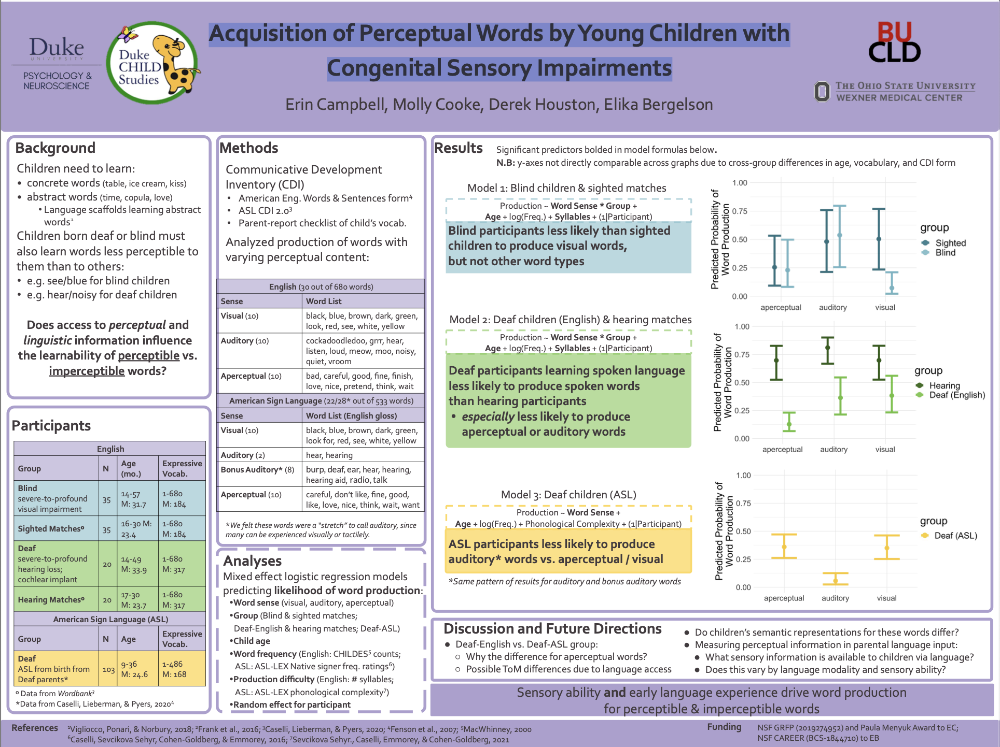

<div class="container" id="main">
 <div class="row">
  <div class="12u">
   <div class="content">
    <!-- Content -->
    <article class="box page-content">
     <header>
      <h2>
       Acquisition of Perceptual Words by Young Children
       <br/>
       <br/>
       with Congenital Sensory Impairments
      </h2>
      <h3>
       Campbell, Cooke, Houston, &amp; Bergelson (2022)
      </h3>
      <h3>
       Presented at BUCLD 47 in Boston, MA
      </h3>
     </header>
     <div class="3u 12u(mobile)">
      <section class="box feature">
       <a class="image featured" href="../../files/presentations/CampbellBergelson_BUCLD_2022.pdf">
        
       </a>
      </section>
     </div>
    </article>
   </div>
  </div>
 </div>
</div>
